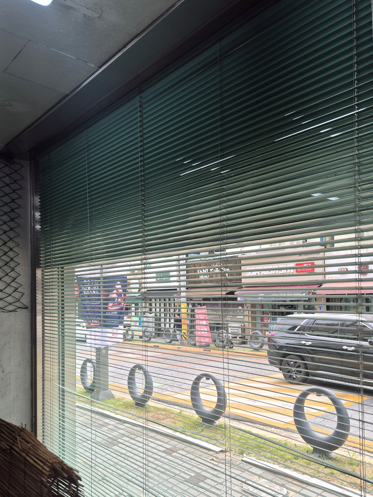
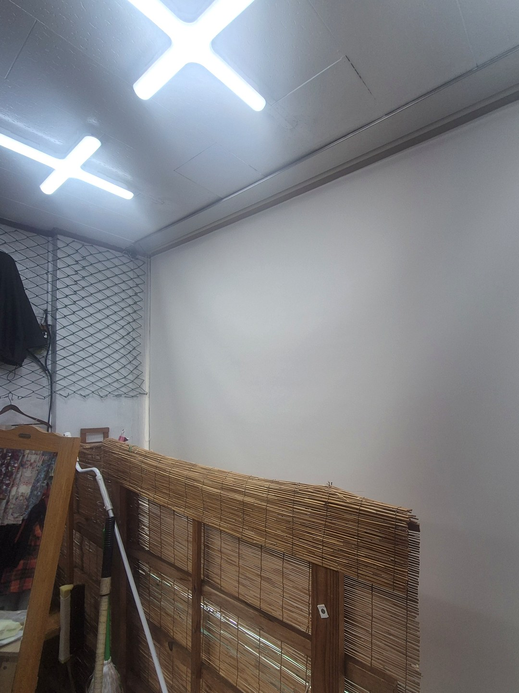
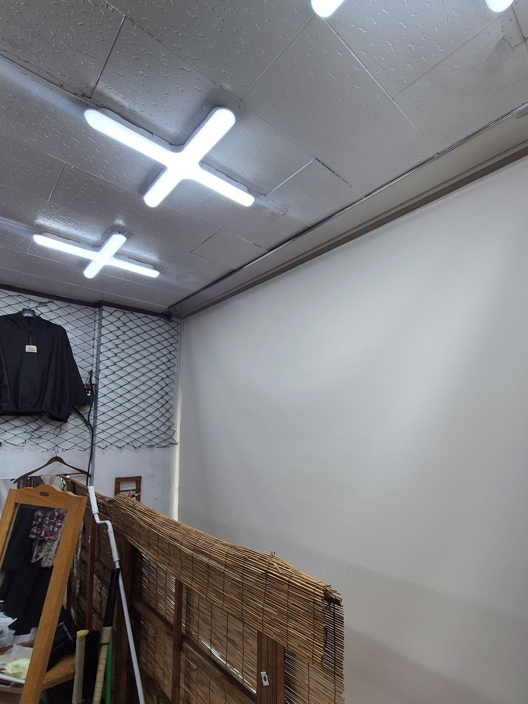
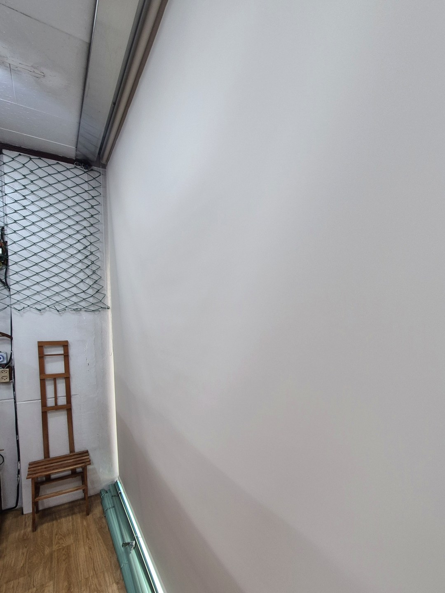

2026년 9월 18일 시공
의성 상가 통유리창
암막 롤스크린 교체 시공후기

의성에 있는 상가의 블라인드 교체 시공입니다.
연락은 대구에 사시는 따님께서 주셨습니다.
부모님이 오래 꾸려 오신 가게의 창을 새로 해 드리고 싶다는 말씀이었습니다.
떼어 낸 것은 오래 쓴 알루미늄 블라인드, 새로 건 것은 암막 롤스크린입니다.
교체 전 — 초록빛 알루미늄 블라인드
길 쪽으로 난 넓은 유리창에 가로살 알루미늄 블라인드가 걸려 있었습니다.
살이 얇은 알루미늄은 해가 거듭될수록 군데군데 휘고, 틈마다 먼지가 쌓입니다.
가게 안에서 매일 오르내리다 보면 끈이 닳아 한쪽이 먼저 올라가는 일도 생깁니다.
고쳐 쓰기보다 바꾸는 편이 낫다고 판단한 이유입니다.

왜 콤비나 알루미늄이 아니라 롤스크린인가
가게 창은 집 창과 쓰임이 다릅니다.
문을 여는 동안에는 창을 시원하게 비워 두고, 문을 닫으면 확실히 가리는 쪽이 편합니다.
롤스크린은 올리면 윗부분 통 안으로 말려 들어가 창이 깨끗하게 드러납니다.
내리면 한 장의 원단이 창을 덮어서, 살 사이로 안이 비치는 일이 없습니다.
살을 하나하나 닦을 필요가 없어서 관리하시는 부모님 손도 덜 갑니다.
원단은 암막으로 골랐습니다.
길가 가게는 오후 햇빛이 유리를 그대로 통과해 안쪽이 달아오르고, 걸어 둔 물건 색이 바래기 쉽습니다.

시공하면서 신경 쓴 것
먼저 기존 알루미늄 블라인드와 브래킷을 떼어 냈습니다.
새 롤스크린은 창틀 안쪽 폭을 끝에서 끝까지 쓰도록 맞춰서, 양옆으로 빛이 새는 틈을 줄였습니다.
원단 색은 흰 벽과 천장 톤에 맞춘 밝은 회색입니다.
어두운 색을 내리면 작은 가게가 더 좁아 보이기 때문에 밝은 쪽으로 권해 드렸습니다.


미리 알고 계시면 좋은 점
롤스크린은 살 각도로 빛을 조절하는 기능이 없습니다.
반만 가리고 싶으면 원단을 중간까지만 내리는 방법뿐입니다.
영업 중에도 안이 들여다보여야 하는 가게라면 암막 대신 빛이 은은히 비치는 원단이 맞을 수 있습니다.
이 가게는 문 닫은 뒤의 가림과 한낮 햇빛 차단을 먼저 보셨기 때문에 암막으로 정했습니다.
가족분이 대신 알아봐 주셔도 됩니다
멀리 사시는 자녀분이 부모님 댁이나 가게를 대신 맡겨 주시는 경우가 꽤 있습니다.
창 사진 한 장과 대략의 크기만 보내 주시면 어떤 제품이 맞을지부터 말씀드립니다.
시공 날에는 현장에 계신 분께 사용법까지 설명드리고 마무리합니다.
상가·사무실 창 이야기는 상가·매장 블라인드 안내에도 정리해 두었습니다.